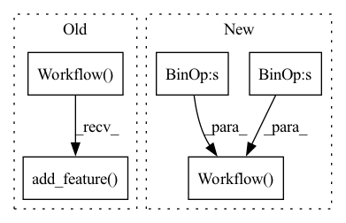

Pattern ID :28302
Before Change
columns = cont_names + cat_names
processor = nvt.Workflow(cat_names=cat_names, cont_names=cont_names, label_name=label_name)
processor.add_feature( [ops.FillMedian()])
processor.add_feature(ops.Normalize())
processor.add_preprocess(ops.Categorify())
processor.finalize()
After Change
columns = cont_names + cat_names
conts = cont_names >> ops.FillMedian() >> ops.Normalize()
cats = cat_names >> ops.Categorify()
workflow = nvt.Workflow( conts + cats + label_name)
workflow.fit(dataset)
workflow.transform(dataset).to_parquet(tmpdir + "/processed")
data_itr = tf_dataloader.KerasSequenceLoader(In pattern: SUPERPATTERN
Frequency: 3
Non-data size: 5
Instances Fragment ID: 83591099
Project Name: nvidia/nvtabular
Commit Name: 4c92dffac4354d816178264bcfcdec722db2ec1c
Time: 2021-01-05
Author: github@benfrederickson.com
File Name: tests/unit/test_tf_dataloader.py
M Class Name: AnonimousClass
N Class Name: AnonimousClass
M Method Name: test_tf_gpu_dl(7)
N Method Name: test_tf_gpu_dl(7)
M Parent Class:
N Parent Class:
M File Name: tests/unit/test_tf_dataloader.py
N File Name: tests/unit/test_tf_dataloader.py
M Start Line: 84
M End Line: 102
N Start Line: 76
N End Line: 92
Before Change
cont_names = ["Cost"]
label_name = ["Post"]
processor = nvt.Workflow(cat_names=cat_names, cont_names=cont_names, label_name=label_name)
processor.add_feature( [ops.FillMissing(), ops.Clip(min_value=0), ops.LogOp()])
processor.add_preprocess(
ops.TargetEncoding(
cat_groups,
"Cost", // cont_targetAfter Change
df = dask_cudf.from_cudf(df, npartitions=3)
cont_names = ["Cost"]
te_features = cat_groups >> ops.TargetEncoding(
cont_names,
out_path=str(tmpdir),
kfold=kfold,
out_dtype="float32",
fold_seed=fold_seed,
drop_folds=False, // Keep folds to validate
)
cont_features = cont_names >> ops.FillMissing() >> ops.Clip(min_value=0) >> ops.LogOp()
workflow = nvt.Workflow( te_features + cont_features + ["Author", "Engaging-User"])
df_out = workflow.fit_transform(nvt.Dataset(df)).to_ddf().compute(scheduler="synchronous")
if kfold > 1:
// Cat columns are unique. Fragment ID: 83591098
Project Name: nvidia/nvtabular
Commit Name: 4c92dffac4354d816178264bcfcdec722db2ec1c
Time: 2021-01-05
Author: github@benfrederickson.com
File Name: tests/unit/test_ops.py
M Class Name: AnonimousClass
N Class Name: AnonimousClass
M Method Name: test_target_encode(4)
N Method Name: test_target_encode(4)
M Parent Class:
N Parent Class:
M File Name: tests/unit/test_ops.py
N File Name: tests/unit/test_ops.py
M Start Line: 198
M End Line: 232
N Start Line: 69
N End Line: 92
Before Change
input_df = cudf.DataFrame({"left": [0, 0, 0, 0, 4], "right": [0, 1, 2, 3, 5]})
op = ColumnSimilarity("output", "left", categories, "right", metric=metric, on_device=on_device)
workflow = nvtabular.Workflow(cat_names=["left", "right"], cont_names=[], label_name=[])
workflow.add_feature( op)
workflow.apply(nvtabular.Dataset(input_df), output_path=None)
df = workflow.get_ddf().compute()
output = df.output.valuesAfter Change
input_df = cudf.DataFrame({"left": [0, 0, 0, 0, 4], "right": [0, 1, 2, 3, 5]})
sim_features = [["left", "right"]] >> ColumnSimilarity(
categories, metric=metric, on_device=on_device
)
workflow = nvtabular.Workflow(sim_features)
df = workflow.transform(nvtabular.Dataset(input_df)).to_ddf().compute()
output = df["left_right_sim"].values
if metric in ("tfidf", "cosine"):
// distance from document 0 to itself should be 1, since these metrics are fully normalized
assert float(output[0]) == pytest.approx(1)
// distance from document 0 to document 2 should be 0 since they have no features in common
assert output[2] == 0
// distance from document 4 to 5 should be non-zero (have category 1 in common)
assert output[4] != 0
// make sure that we can operate multiple times on the same matrix correctly
sim_features = [["left", "right"]] >> ColumnSimilarity(
categories, metric="inner", on_device=on_device
)
workflow = nvtabular.Workflow( sim_features)
df = workflow.transform(nvtabular.Dataset(input_df)).to_ddf().compute()
assert float(df["left_right_sim"].values[0]) == pytest.approx(3) Fragment ID: 83591102
Project Name: nvidia/nvtabular
Commit Name: 4c92dffac4354d816178264bcfcdec722db2ec1c
Time: 2021-01-05
Author: github@benfrederickson.com
File Name: tests/unit/test_column_similarity.py
M Class Name: AnonimousClass
N Class Name: AnonimousClass
M Method Name: test_column_similarity(2)
N Method Name: test_column_similarity(2)
M Parent Class:
N Parent Class:
M File Name: tests/unit/test_column_similarity.py
N File Name: tests/unit/test_column_similarity.py
M Start Line: 28
M End Line: 64
N Start Line: 28
N End Line: 63